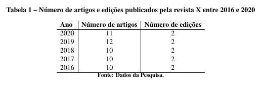

Exemplos Visuais dos Comandos
Veja abaixo exemplos práticos de cada comando do modelo e o resultado visual gerado no PDF.
Configuração da Revista
\setLogoRevista{figuras/logo-revista.png}Aonde "figuras/logo-revista.png" é o caminho para a imagem do logo da revista.
\setCheckForUpdatesUrl{http://link.com}Aonde "http://link.com" é a URL para verificar atualizações.
Dados do Artigo
\secaoNome{Artigo Original}"Artigo Original" é o nome da seção do artigo (ex: Revisão, Relato de Caso, etc).
\editorNome{Nome do Editor}"Nome do Editor" é o responsável pela edição do artigo.
\dataRecebido{31/03/2025}Data em que o artigo foi recebido.
\dataAprovado{28/05/2025}Data em que o artigo foi aprovado.
\dataPublicado{05/06/2025}Data em que o artigo foi publicado.
\pidArtigo{10.0000/...}PID é o identificador único do artigo.
\doiArtigo{https://doi.org/...}DOI é o identificador digital do artigo.
Licenças e Créditos
\tipoLicenca{CC-BY-SA}Tipo de licença Creative Commons do artigo (ex: CC-BY, CC-BY-SA, CC-BY-NC, CC-BY-ND, CC-BY-NC-SA e CC-BY-NC-ND). Ele automaticamente atribui a imagem da licença correspondente.
\textoLicenca{Este é um artigo de acesso aberto distribuído sob os termos da licença Creative Commons Attribution (CC BY-SA), que permite uso, distribuição e reprodução em qualquer meio, desde que o trabalho original seja devidamente citado.}Texto explicativo sobre a licença escolhida.
\textoCopyright{© 2025 Nome da Revista. Os autores mantêm os direitos autorais e concedem à revista o direito de primeira publicação.}Declaração de direitos autorais do artigo.
\textoCRediT{Conceituação: Autor A; Metodologia: Autor B; Análise de dados: Autor C; Redação – rascunho original: Autor A; Revisão e edição: Autor B e Autor C.}Créditos dos autores segundo a Taxonomia CRediT.
\textoConflito{Os autores declaram que não existem conflitos de interesse relacionados a este trabalho.}Declaração sobre conflitos de interesse.
\textoFinanciamento{Esta pesquisa foi financiada pelo Conselho Nacional de Desenvolvimento Científico e Tecnológico (CNPq), processo nº 000000/2025-0.}Fonte de financiamento do trabalho.
Informações dos Autores
\afiliacao{1}{Instituto X, Departamento Y, Universidade Z}Afiliação do autor, indicando instituição, departamento e universidade. O número identifica a afiliação para os autores.
\autor{João da}{Silva}{1}{https://orcid.org/0000-0000-0000-0001}Nome do autor, número da afiliação e link do ORCID. Repita para cada autor.
\emailCorrespondencia{email@mail.com}E-mail do autor responsável pela correspondência.
Título, Resumo e Palavras-chave
\monog{Título do Artigo em Português}Título do artigo em português, claro e objetivo.
\resumoPT{Este artigo apresenta uma análise sobre ...}Resumo do artigo em português, destacando objetivo, método e principais resultados.
\keywordsPT{inteligência artificial; educação; personalização; aprendizagem; tecnologia}Palavras-chave separadas por ponto e vírgula, representando os principais temas do artigo.
Resumo em Inglês
\monogIngles{Title of the Article in English}Título do artigo em inglês, fiel ao original.
\resumoEN{This article presents an analysis of ...}Resumo do artigo em inglês, com objetivo, método e resultados.
\keywordsEN{artificial intelligence; education; personalization; learning; technology}Palavras-chave em inglês, separadas por ponto e vírgula, representando os principais temas do artigo.
Resumo em Espanhol
\monogEspanhol{Título del artigo en Español}Título do artigo em espanhol, fiel ao original.
\resumoES{Este artículo apresenta un análise sobre ...}Resumo do artigo em espanhol, com objetivo, método e resultados.
\keywordsES{inteligencia artificial; educação; personalização; aprendizagem; tecnologia}Palavras-chave em espanhol, separadas por ponto e vírgula, representando os principais temas do artigo.
O título do artigo e suas variações em outras línguas são apresentadas abaixo do logo da revista
Como Citar o Artigo
\comoCitar{
\textit{Nome da Revista}, Cidade, v. 23, p. x--xx, 2025.
DOI: https://doi.org/10.0000/0000-0000-0000.
}Este bloco aparece no final da capa do artigo e orienta o leitor sobre como citar corretamente o trabalho. Os nomes dos autores, título do artigo e DOI são preenchidos automaticamente pelos comandos anteriores.
Bibliografia (BibTeX)
\bibliography{bibliografia}
\bibliographystyle{abntex2-alf}Inserido ao final do documento, antes do end{document}, este comando serve para incluir a bibliografia do artigo de acordo com as normas da ABNT. As Referências são extraídas automaticamente dos comandos \cite e \citeonline utilizados no texto e adicionadas no arquivo bibliografia.bib de acordo com os padrões do LaTeX.
Exemplo de Citação no Texto
A citação pode ser realizada das seguintes formas:
Teste de citação:~\cite{ponciano2018agreement}.Citação no formato autor-data, usada dentro do texto.
Teste de citação com dois autores:~\cite{ponciano2018agreement, ferreira}.Citação com dois autores, separada por vírgula.
Teste em texto corrido:~\citeonline{ponciano2018agreement}.Citação narrativa, usada para destacar o autor no texto.
Além disso é possível realizar citações longas em um bloco específico:
\begin{citacao}
A citação longa deve ser formatada com recuo à esquerda de 4 cm,
fonte menor que o corpo do texto e espaçamento simples, conforme as
normas da ABNT. Este exemplo demonstra o comportamento do ambiente,
mostrando como o texto fica visualmente destacado em relação ao
restante do conteúdo, permitindo a identificação imediata de uma
citação direta longa no documento.
\end{citacao}
Exemplo de Figura
Um exemplo de figura inserida no texto:
\begin{figure}[htb]
\centering
\caption[Processo de Revisão da Revista X.]{Processo de revisão da revista X}
\label{fig:figura1}
\includegraphics[width=0.8\textwidth]{figuras/review.png}\\
\textbf{\footnotesize Fonte: Dados da Pesquisa.}
\end{figure}O comando [htb] indica que a figura pode ser posicionada aqui (h), no topo (t) ou na parte inferior (b) da página. O comando \centering centraliza a figura na página. O comando \caption define a legenda da figura, enquanto o comando \label permite a referência cruzada. O comando \label deve ser colocado após o comando \caption para garantir que a referência esteja correta. O comando \includegraphics é utilizado para inserir a imagem da figura. E por fim, o comando \textbf{\footnotesize Fonte: Dados da Pesquisa.} é utilizado para adicionar a fonte da figura.
Exemplo de Tabela
Um exemplo de tabela inserida no texto:
\begin{table}[ht]
\centering
\caption{Número de artigos e edições publicados pela revista X entre 2016 e 2020}
\label{tab:tabela1}
% Conteúdo da tabela
\begin{tabular}{l|c|c}
\hline
\textbf{Ano} & \textbf{Número de artigos} & \textbf{Número de edições} \\
\hline
2020 & 11 & 2 \\
2019 & 12 & 2 \\
2018 & 10 & 2 \\
2017 & 10 & 2 \\
2016 & 10 & 2 \\
\hline
\end{tabular}
{\footnotesize\\ \textbf{Fonte: Dados da Pesquisa.}}
\end{table}O comando [ht] indica que a tabela pode ser posicionada aqui (h) ou no topo (t) da página. O comando \centering centraliza a tabela na página. O comando \caption define a legenda da tabela, enquanto o comando \label permite a referência cruzada. O ambiente tabular é utilizado para definir as colunas e linhas da tabela, onde l indica coluna alinhada à esquerda e c coluna centralizada. O comando \hline cria linhas horizontais para separar os cabeçalhos dos dados. E por fim, o comando \textbf{\footnotesize Fonte: Dados da Pesquisa.} é utilizado para adicionar a fonte da tabela.
Exemplos de Equação
As equações podem ser inseridas usando o ambiente equation ou inline com o símbolo $. Veja alguns exemplos:
\begin{equation}
\label{eq:aid}
y_{i,d}=\frac{\displaystyle\sum_{w\in Y_{i,d}}s_{w,d}}{|Y_{i,d}|}
\end{equation}
\begin{equation}
\label{eq:bid}
x_{i,d}=\frac{\displaystyle\sum_{w\in X_{i,d}}s_{w,d}}{|X_{i,d}|}
\end{equation}
\begin{equation}
\label{eq:qscore}
r_{i,d} = \frac{s_{i,d} + y_{i,d}-x_{i,d} + 1}{3}, r_{i,d}\in[0,1]
\end{equation}As equações acima são exemplos de como inserir fórmulas matemáticas complexas no LaTeX, utilizando o ambiente equation para numeração automática e referência cruzada através do uso de \ref{eq:aid}.
$r_{i,d} = \frac{s_{i,d} + y_{i,d}-x_{i,d} + 1}{3}, r_{i,d}\in[0,1]$As equações acima são exemplos de como inserir fórmulas matemáticas inline no LaTeX, utilizando o símbolo $ para delimitar a equação.
Exemplo de Algoritmo
Um exemplo de algoritmo em pseudocódigo:
\begin{algorithm}
\caption{Valor Máximo no Vetor}
\label{alg:max}
\begin{algorithmic}[1]
\REQUIRE $list$
\ENSURE $biggest\_item$
\STATE $biggest\_item \Leftarrow list[0]$
\FORALL{$item$ in $list$}
\IF{$item > biggest\_item$}
\STATE $biggest\_item \Leftarrow item$
\ENDIF
\ENDFOR
\end{algorithmic}
\end{algorithm}